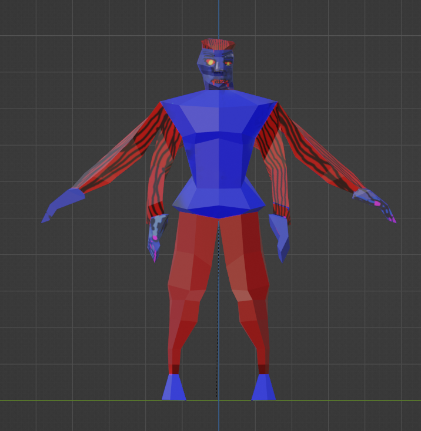
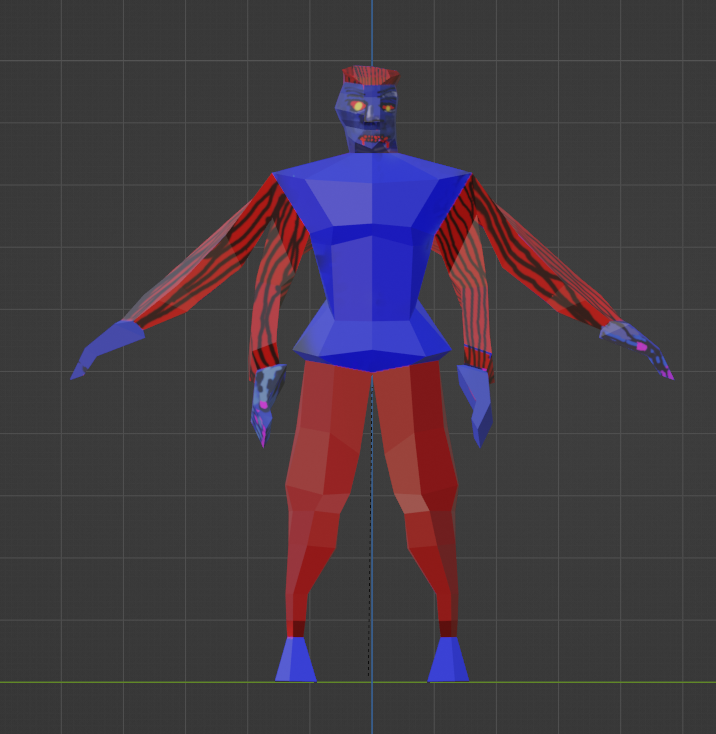
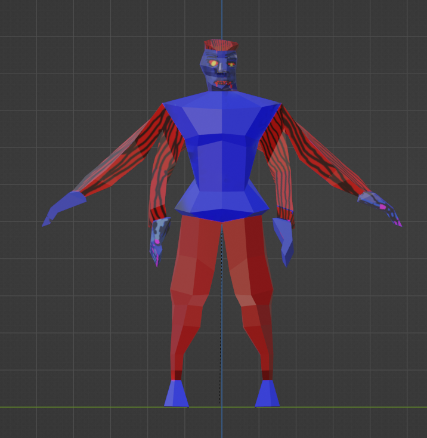

| As a painter, I was always drawn to the contrast between precision and intuition, yet I was struggling to gain complete control of my brush and material. Hence, digital media that supports high intricacy and accuracy captures my attention. I engage in experimentation with 3D software throughout the project. Digital software allows for high certainty in measurement which is appropriate for my exploration of rationalism and physics. Likewise, 3D printing technology also grants a perfectly smooth surface that allows translation from digital to reality. By using digital software like Blender, I can also create prototypes and consider various color combinations on screen for experimentation. |
